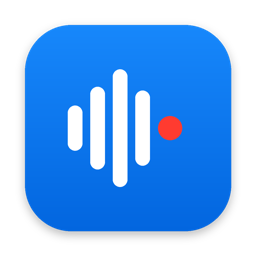
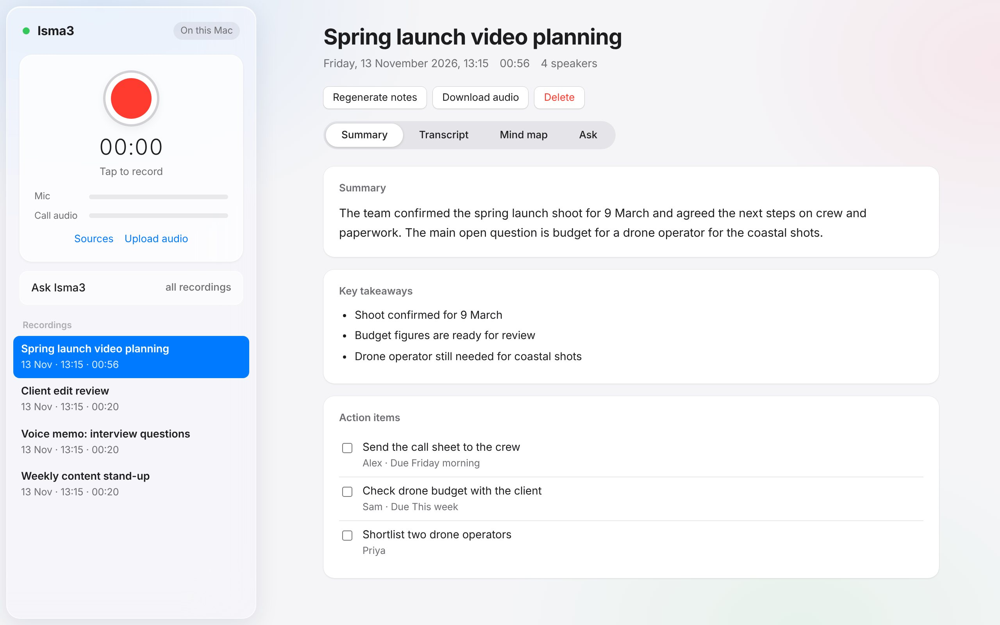
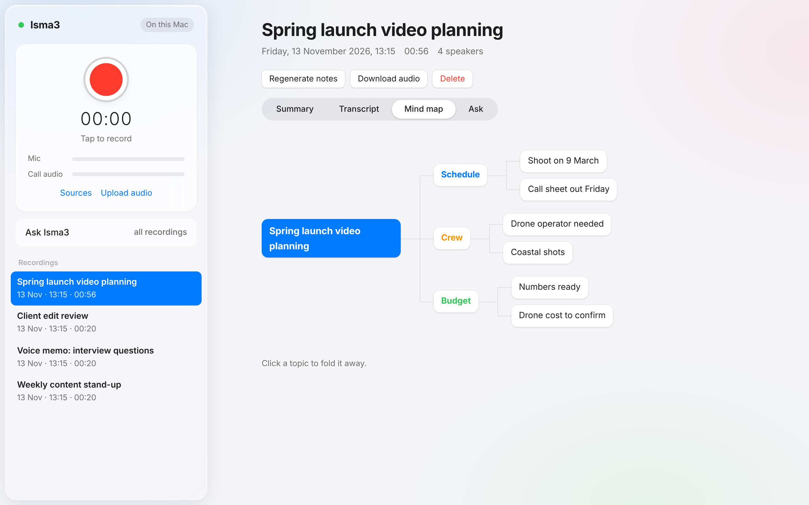
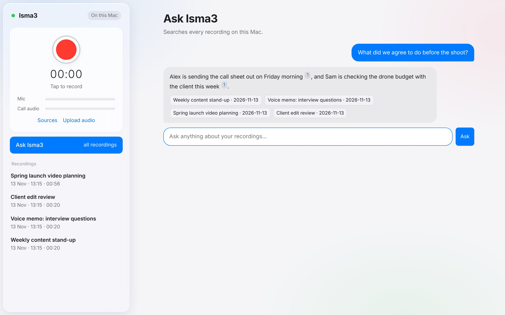
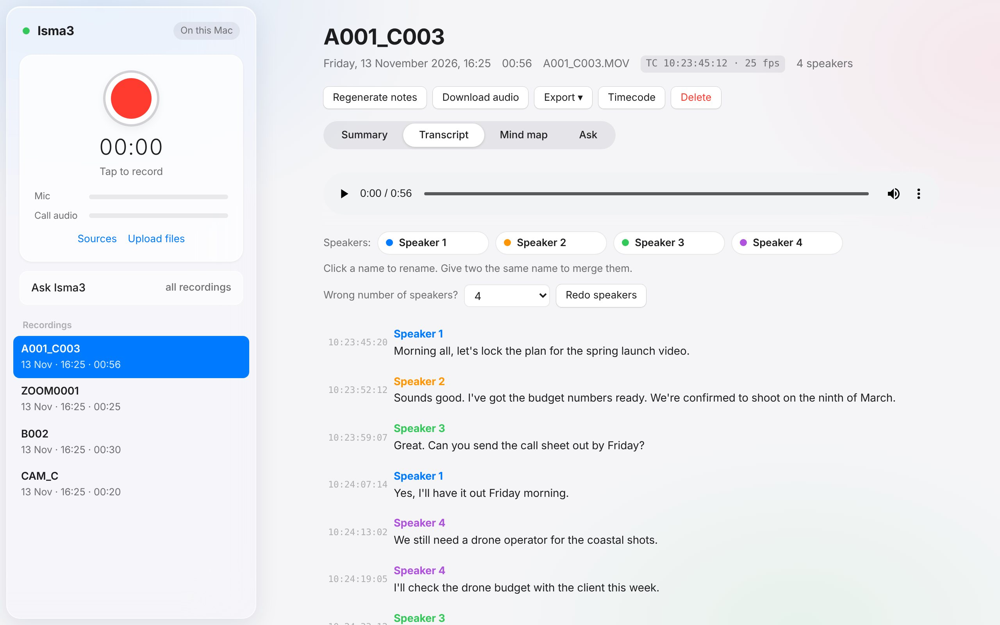
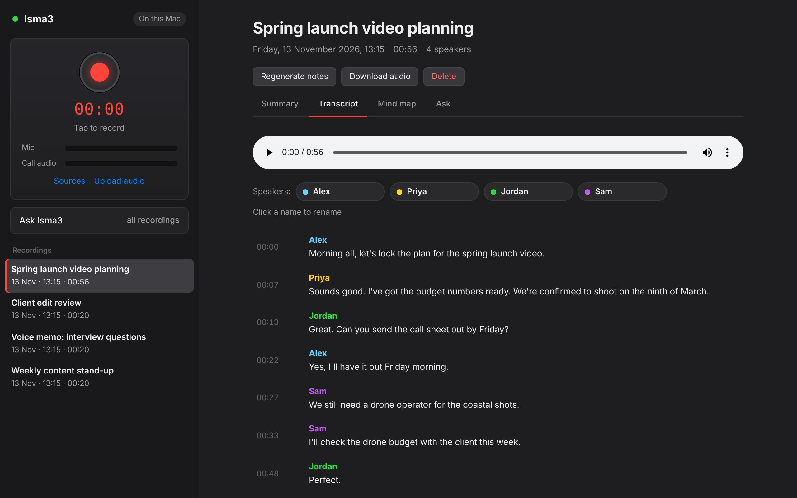

Free for Mac
Isma3 records your meetings and calls, then hands you a transcript with everyone's names, a summary, action items and a mind map. All of it happens on your Mac, so nothing leaves it.
اسمع (isma3) means "listen" in Arabic.
Free and open source · Apple Silicon Macs · No account, no subscription

Everything a note-taking device does, without the device. Your Mac's microphone and a free audio add-on are all it needs.
Records the people in the room, plus both sides of Zoom, Teams, Meet, FaceTime and iPhone calls. No bot joins the call.
An accurate transcript with each speaker labelled. Rename them once, and click any line to hear that moment.
A short summary, key takeaways, and every to-do with who owns it and when it's due.
The main topics laid out visually, so you can take in a long meeting at a glance.
"What did I promise to do this week?" Isma3 searches every conversation and links each answer to its source.
Optionally drops a tidy note for each recording into your Obsidian vault, with tick-box action items included.

Mind map

Ask Isma3
Isma3 installs as a proper Mac app. Click the icon and it opens in its own window, ready to record. There's no Terminal and no browser tabs.
Press ⌘ Space, type “Isma3”, and keep it in your Dock.
Isma3 hears your microphone and everything your Mac plays, so it captures both sides without a bot joining the meeting.
Settings → Audio → Speaker: Same as System.
Settings → Devices → Speaker: Isma3 Calls.
Use the Mac app or WhatsApp Web. Calls on your iPhone can't be captured.
Calls you answer on your Mac are captured too.
One-time setup: create the Isma3 Calls output (see Install below). Headphones keep voices from being recorded twice.
Drop in camera clips after the shoot. Isma3 reads each clip's timecode and stamps every line of the transcript with it, ready for the edit.

From MOV, MP4 and MXF clips, plus sound-recorder WAVs. Works at any frame rate, including drop-frame.
Export SRT captions with speaker names that line up when you make a sequence from the clip.
A CSV with TC in and out, speaker and text for every line, for paper edits and selects.
There's no cloud, account or upload. Your recordings, transcripts and notes stay on your Mac, and it works on a plane.

About 30 minutes, mostly waiting for the AI models to download. After that, Isma3 works offline.
Press ⌘ Space, type Terminal and press Return. Paste the line below and press Return. It downloads Isma3 into a Isma3 folder in your home folder.
A new Terminal window opens and sets everything up. It asks for your name, your Obsidian vault (optional) and your Mac password once or twice. Characters don't show as you type your password. That's normal.
When it says All done, press ⌘ Space, type Isma3 and press Return. Drag the blue Isma3 icon to your Dock so it's always one click away. It opens in its own window, and you allow the microphone once.
New to Isma3? The User Guide walks through everything, step by step.
Headphones stop voices being recorded twice. Volume keys don't work on a Multi-Output device, so set the volume in the call app.
Download the ZIP, unzip it and move the folder into your home folder. macOS blocks scripts downloaded through a browser, so open Terminal in that folder and run xattr -dr com.apple.quarantine . before double-clicking install.command.
Run the same Terminal line again. It updates the app and leaves your recordings, settings and models alone.
Recording people without their consent is illegal in many places. Always tell people when you're recording.